Чебаник Гротеск
ChebanykGroteskCond

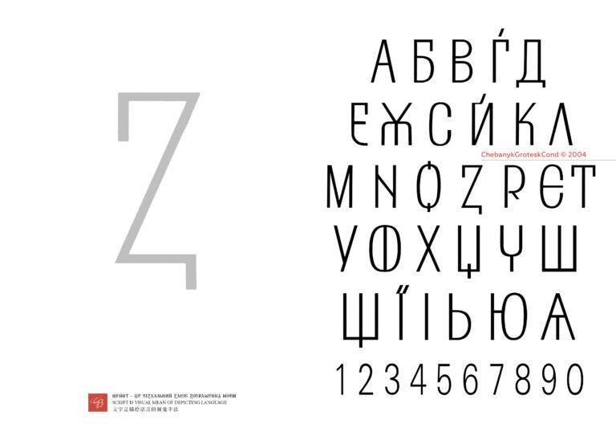
Зразок із сайтуПробний набір
Авторство та умови
КОНСТИТУЦІЯ УКРАЇНИ
У наборі лише великі літери.
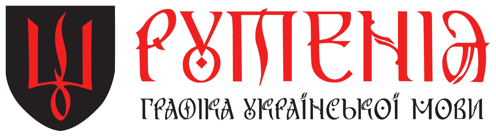
Сайт проєктуГРАФІКА ВАСИЛЯ ЧЕБАНИКА
Шрифти проєкту «Рутенія» —
переглядай, пробуй, завантажуй.
КОЛЕКЦІЯ
14 гарнітур
Один текст — різні гарнітури.
ChebanykGroteskCond

Зразок із сайтуКОНСТИТУЦІЯ УКРАЇНИ
У наборі лише великі літери.
Diduh
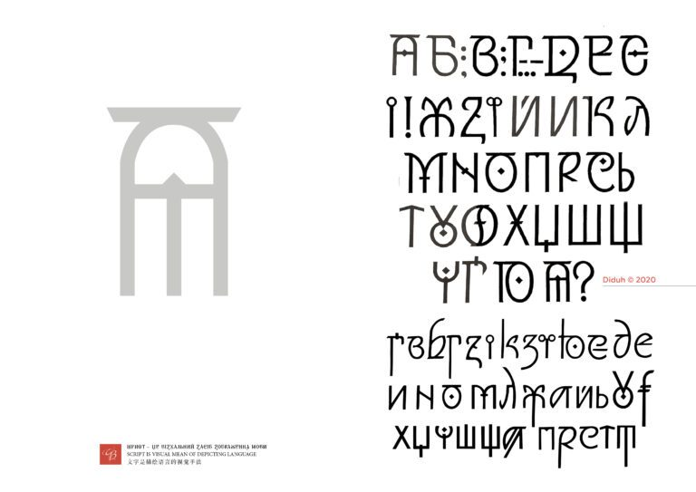
Зразок із сайтуКОНСТИТУЦІЯ УКРАЇНИ
У наборі лише великі літери.
KrasnopysChebanyk
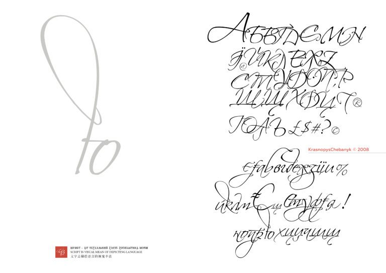
Зразок із сайтуКОНСТИТУЦІЯ УКРАЇНИ
У наборі лише великі літери.
Rutenia
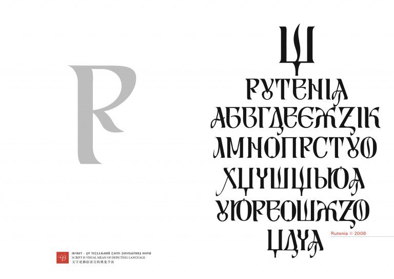
Зразок із сайтуКОНСТИТУЦІЯ УКРАЇНИ
У наборі лише великі літери.
Rutenia Italic
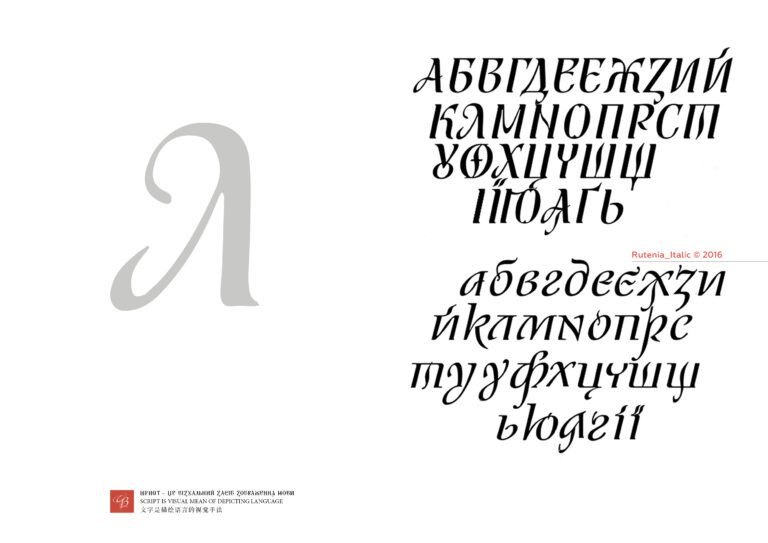
Зразок із сайтуКОНСТИТУЦІЯ УКРАЇНИ
У наборі лише великі літери.
Rutenia_Bold
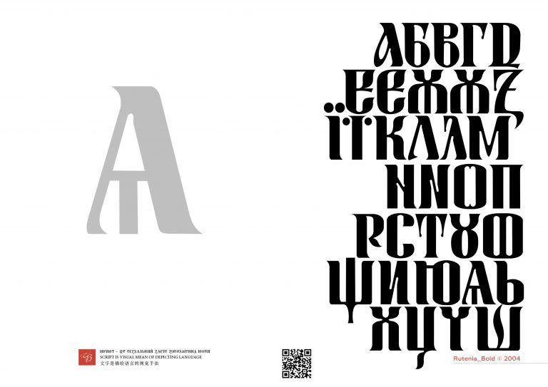
Зразок із сайтуКОНСТИТУЦІЯ УКРАЇНИ
У наборі лише великі літери.
Rutenia_Nezalezhna
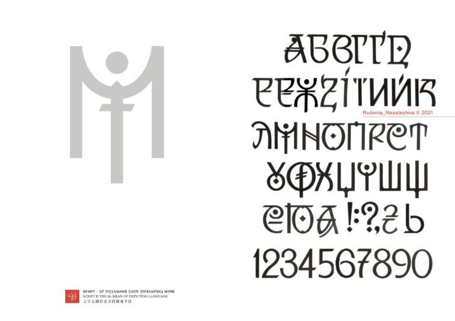
Зразок із сайтуКОНСТИТУЦІЯ УКРАЇНИ
У наборі лише великі літери.
RuteniaAkcidentna
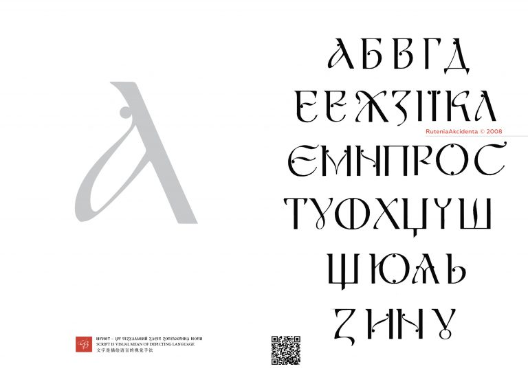
Зразок із сайтуКОНСТИТУЦІЯ УКРАЇНИ
У наборі лише великі літери.
RuteniaArial
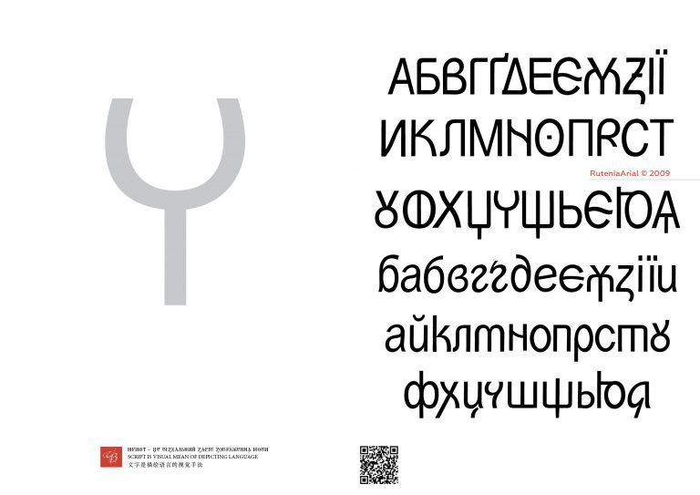
Зразок із сайтуКОНСТИТУЦІЯ УКРАЇНИ
У наборі лише великі літери.
RuteniaDecor
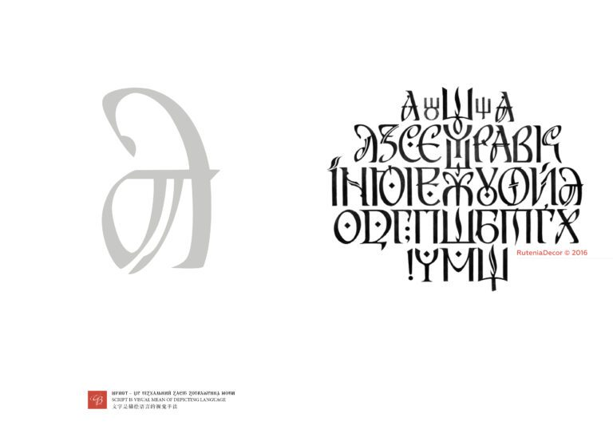
Зразок із сайтуКОНСТИТУЦІЯ УКРАЇНИ
У наборі лише великі літери.
RutheniaRada
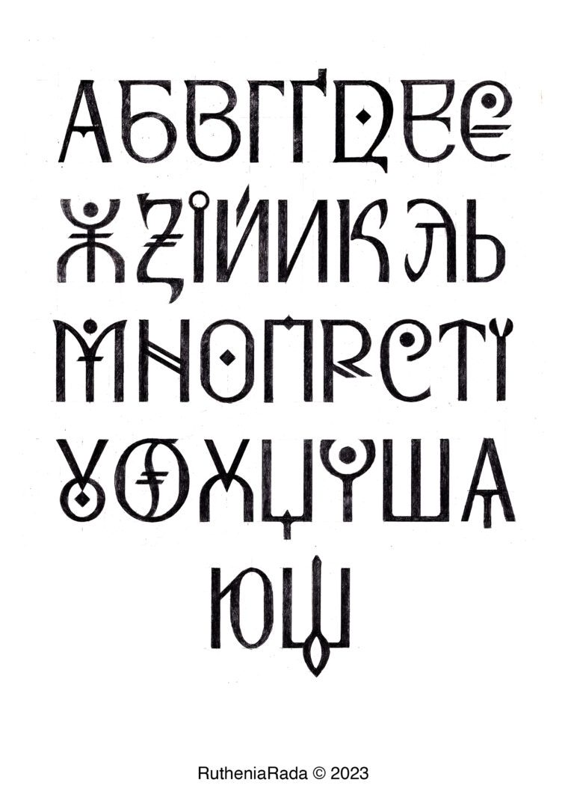
Три зразкиКОНСТИТУЦІЯ УКРАЇНИ
У наборі лише великі літери.
RutheniaRadaText
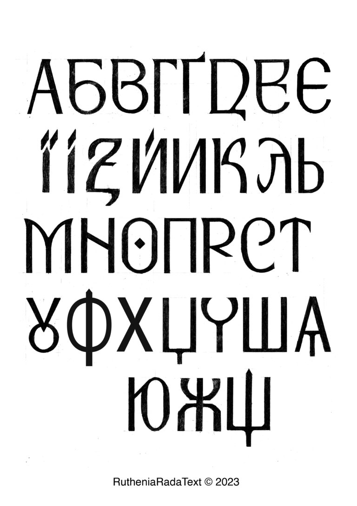
Три зразкиКОНСТИТУЦІЯ УКРАЇНИ
У наборі лише великі літери.
ShypshynaCursive_Italic
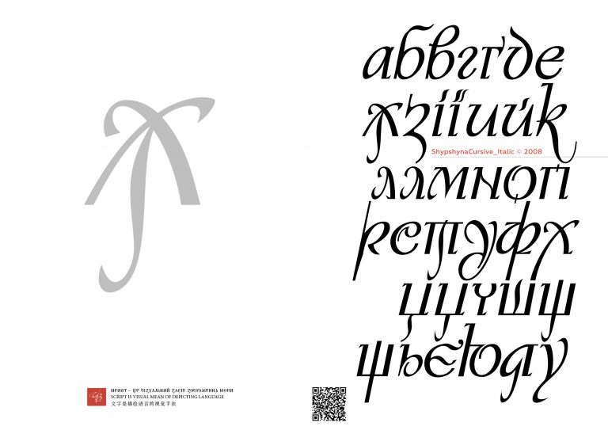
Зразок із сайтуКОНСТИТУЦІЯ УКРАЇНИ
У наборі лише великі літери.
SofiaKyivska
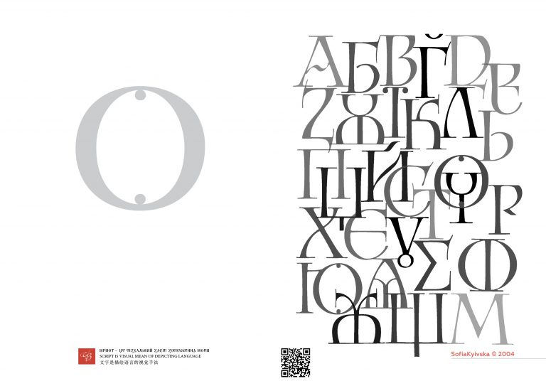
Зразок із сайтуКОНСТИТУЦІЯ УКРАЇНИ
У наборі лише великі літери.
Спробуй іншу назву або зміни формат.
У колекції — 14 позицій із зібраного набору. Повний актуальний каталог — на сайті проєкту .
ПРО КОЛЕКЦІЮ
«Рутенія» — проєкт абеткової графіки Василя Чебаника. Різні гарнітури втілюють його пропозицію конструкції українських літер.
Тут зібрано оригінальні файли зі сторінок abetkarutenia.com.ua та зображення їхніх зразків. Шрифти збережено без конвертації й редагування. Відомості про цифрові версії та співавторів — у картці авторства кожної гарнітури.
На сайті джерела зазначено CC BY-SA 4.0. Окремі авторські повідомлення й умови збережено разом із файлами.
Відкрити файли та авторські відомостіОсновний текст — RutheniaRadaText, заголовки — RutheniaRada. Пробний текст у кожній картці — її власною гарнітурою.